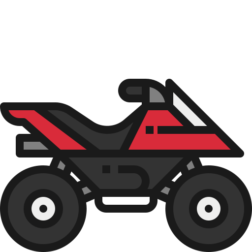

.png) Lookout,Adventure Bay
Lookout,Adventure Bay
Loggervick,Logger Vick much as the name suggests, is a logger, whose job is to cut down trees from the forest. He plans to cut down the majority of the trees, in order to sell them to make some income for his old age. He goes to the forest to cut down trees and meets the bear brothers. Logger Vick is always seen carrying a chainsaw and a shotgun.
Lookout,Adventure Bay
 Hamburger
Hamburger
 Loggervick has a orange ahovrcraft.